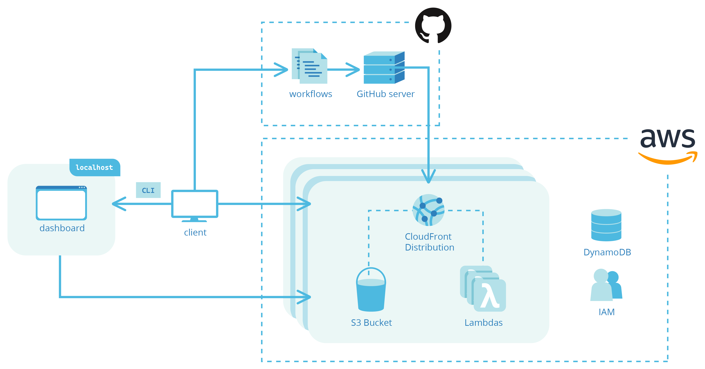

Potato Bin
A RequestBin-like tool for inspecting webhooks (DO Droplet, Nginx, MongoDB, Express, React)
Software Engineer
I'm a software engineer with a past life in fine arts and design. When I'm not developing web applications, you might find me tending to native plants or hanging out with my three cats. I'm currently based in the Dallas-Fort Worth Metroplex.
I most recently co-created Bubble, an open-source preview app solution for dynamic front-end applications.
My remote team and I created Bubble to make it easy for software developers and their colleages to immediately review frontend features.
Whenever a developer makes a pull request for a new UI/UX feature, Bubble automatically builds and deploys a fully-functioning draft of their web application—called a preview app—and provides a shareable URL via a pull request comment.
Bubble integrates with GitHub repositories and automates the deployment and teardown of preview apps through a developer’s own AWS account, allowing developers to maintain full control over their source code and self-hosted cloud-based infrastructure. All preview apps can be easily managed through Bubble’s CLI tool as well as its user-friendly dashboard interface.
A RequestBin-like tool for inspecting webhooks (DO Droplet, Nginx, MongoDB, Express, React)
A Trello-like, Kanban-style project management app (MongoDB, Express, React/Redux, Node.js)